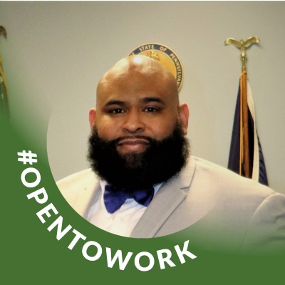

Military Leadership
Experience leading personnel, managing resources, maintaining accountability, and operating within structured environments where accuracy, compliance, and readiness were mission critical.
Cybersecurity Portfolio
Cybersecurity management professional focused on GRC, audit readiness, infrastructure security, and operational risk.
My path has not been one straight line, and that is part of the value I bring. Military logistics taught me accountability, civilian operations taught me how to communicate under pressure, and my HomeLAB gives me a hands-on way to understand the systems that governance, risk, and compliance programs protect.

About
I combine military leadership, cybersecurity management studies, and hands-on infrastructure administration to develop practical solutions that support security, compliance, operational readiness, and continuous improvement. My goal is to bridge the gap between business objectives, risk management, and the technology environments organizations depend on every day.
Experience leading personnel, managing resources, maintaining accountability, and operating within structured environments where accuracy, compliance, and readiness were mission critical.
Focused on governance, risk management, compliance, audit readiness, security controls, and helping organizations align operational practices with business and security objectives.
Maintain a multi-node HomeLAB supporting virtualization, networking, monitoring, automation, storage, and AI experimentation to develop hands-on understanding of the technologies that governance and security programs protect.
Capabilities
Experience building discipline around procedures, accountability, records, SOPs, and clear communication. Focused on turning security requirements into practical, documented steps that people can follow.
Trained to recognize operational risk, protect sensitive assets, support vulnerability assessment, and connect cybersecurity concepts to business impact, mission readiness, and responsible decision-making.
Developing knowledge across NIST, ISO 27001, risk management, incident response planning awareness, information security, access control concepts, and compliance-focused reporting.
HomeLAB & Infrastructure Operations
Design and maintain a multi-node lab environment supporting virtualization, network services, secure remote access, storage, monitoring, automation, and AI experimentation. The environment serves as a practical platform for developing hands-on understanding of enterprise infrastructure, security controls, operational processes, governance concepts, and risk management practices.
Credentials


Recognized for outstanding support to operational readiness and mission execution during deployment.
Recognition for honorable service, discipline, and professional conduct.
Recognition for campaign service and participation in Iraq operations.
American Military University. Graduated with a 3.35 GPA.
CertificateCertificate of completion.
HonorLifetime membership recognition.
HonorLifetime membership recognition.
Experience
Military logistics and supply experience built a strong foundation in asset control, sensitive equipment handling, inventory discipline, chain-of-custody thinking, and responsible management of resources.
Operational experience across military leadership, logistics management, customer-facing operations, and technical environments has developed a foundation in accountability, risk awareness, process adherence, documentation, communication, and operational oversight, skills that directly support governance, risk management, compliance, and cybersecurity initiatives.
Across military and civilian roles, the common thread is disciplined process: follow the standard, document clearly, protect assets, communicate issues, and support readiness through consistent execution.
This experience supports a GRC-focused cybersecurity path: understanding risk, aligning work to frameworks, maintaining documentation, improving controls, protecting information, and helping teams make security part of daily operations.
Education
American Military University, current studies. Current GPA: 3.88.
American Military University. Graduated with a 3.35 GPA.
Army Sustainment University.
Completed in 2005. Strengthened technical precision, design thinking, and adaptability.
International Culinary Center. Background that reflects adaptability, discipline, and performance under pressure.
Contact